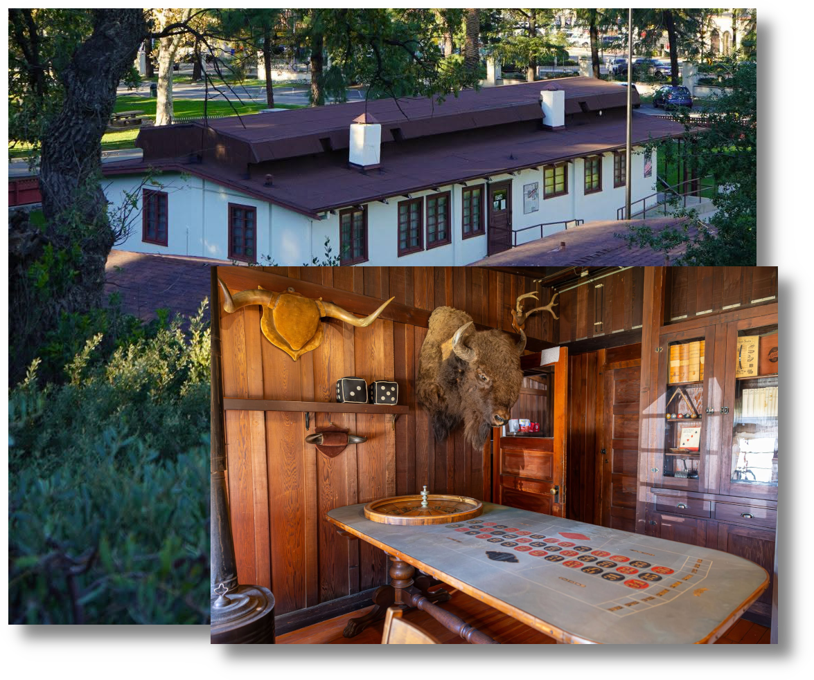

The Historic Ranch House

Peek inside the historic 1910 Ranch House, which beautifully documents daily life on William S. Hart's Horseshoe Ranch and his legendary silent movie career.
Located directly next to the park's picnic area, this redwood structure was originally built using traditional board-and-batten construction—wide wooden planks joined together with narrow wood strips. Though Hart had the exterior covered in stucco in 1922 to protect it, visitors who venture inside can still see the beautiful, original exposed wood walls.
A True Rancher's Home
Did you know? William S. Hart purchased the ranch house in 1921, but he was already intimately familiar with the property, having previously lived there while renting it from George Babcock Smith. Later, he continued living in this modest home from 1925 to 1927 while his grand hilltop mansion, "La Loma de los Vientos" (The Hill of the Winds), was being built.